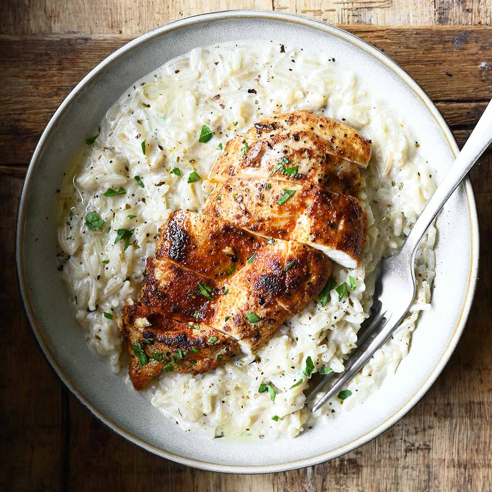

Rice and Chicken
Home

Description
This dish offers a p
erfect harmony of seasoned chicken breast,
seared to a golden yellow, slightly crispy on the outside
and tender on the inside, paired with a creamy rice bed
(reminiscent of risotto or orzo rice).
The chicken was pan-simmered over high heat,
seasoned with aromatic spices such as freshly
ground black pepper and possibly red chili powder,
resulting in a rich aroma and appetizing texture.
The rice bed, forming the base of the dish,
stands out with its creamy sauce and slightly
glossy appearance. Likely enriched with garlic,
Parmesan cheese, and a touch of cream, this
rice-based layer has a delicate flavor profile
that balances the spicy intensity of the chicken.
Sprinkles of fresh parsley add color, while a drizzle
of extra virgin olive oil and black
pepper completes the gourmet presentation.
Ingredients
- 2 chicken breasts (cut in half lengthwise)
- 1 cup rice or barley noodles
- 2 cloves garlic (crushed)
- 2 tablespoons butter
- 1 tablespoon olive oil
- 2.5 cups chicken broth (hot)
- 1/2 cup cream or grated Parmesan cheese
- Salt, freshly ground black pepper, sweet paprika, dried thyme (optional)
- For garnish: Half a bunch of finely chopped fresh parsley
Steps
-
Preparation and Seasoning: Pat the chicken breasts dry.
Generously season both sides with salt, plenty of black pepper,
and red paprika powder.
- Searing the Chicken: Heat olive oil and a tablespoon of
butter in a large pan. Place the chicken in the pan and
cook until golden brown on both sides (about 5-6 minutes per side).
Remove the cooked chicken to a plate and let it rest.
- Aromatic Base: Add the remaining butter to the same pan.
Add the crushed garlic and sauté for 1 minute until fragrant.
- Cooking the Rice/Vermicelli: Add the rice or vermicelli and sauté for 2
minutes until translucent. Then, gradually add the hot chicken broth,
simmering over low heat until the rice is tender and has absorbed the
liquid.
- Creamy Touch: Once the rice is cooked, add the cream or Parmesan
cheese and stir quickly. Turn off the heat when the sauce has
slightly thickened and reached a velvety consistency.
- Assembling: Spread the prepared creamy base onto a serving plate.
Slice the rested chicken breasts and place them on top of the rice.
- Serving: Garnish with freshly chopped parsley, extra black pepper,
and if desired, a drizzle of extra virgin olive oil. Serve hot.